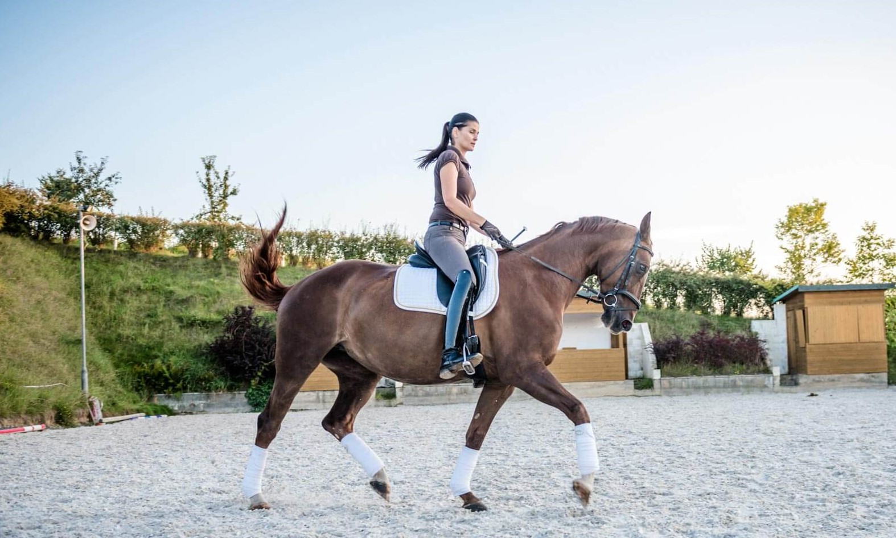

Naše stáje se založily v roce 2011 a postupem času se zdokonalovaly. Zaměřujeme se především na parkur, ale najdete u nás i drezurní trenéry. Nacházíme se u obce Hradištko v okrese Nymburk ve Středočeském kraji s krásnou přírodou a atmosférou. Na našem statku provozujeme jezdecký oddíl a klub. Oddíl je určen pro děti a jezdce s vlastními koni, kteří mají jezdecké ambice. Náš klub zase pro děti a jedzce, kteří teprv začínají jezdit, mají koně v pronájmu a nebo jezdí pro radost a chtějí se zlepšovat. Můžete k nám zavítat i jako veřejnost, užít si den s koňmi, zajezdit si či povozit se a podívat se, jak to na statku chodí. Mezi naše největší úspěchy patří 1.místo v závodech Český skokový pohár v roce 2019.
